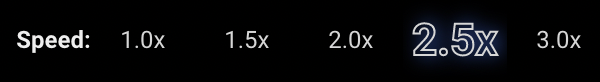
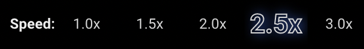

Start setting custom speeds on videos!
Find the speed buttons on your YouTube videos near the Play button.
 Revisit this page to find stats on how much time you've saved watching each YouTube channel!
Find the speed buttons on your YouTube videos near the Play button.
 Revisit this page to find stats on how much time you've saved watching each YouTube channel!
You've saved hours!
channels have played videos Faster.
channels have played videos Faster.
Help * Comments * Requests * Reviews